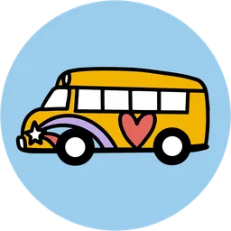

01Montessori on Wheels · Impact Report
Impact since 2021.
What happens when the classroom comes to the community: children, families and partners reached since MoW first rolled out in Denver in June 2021.
01Montessori on Wheels · Impact Report
What happens when the classroom comes to the community: children, families and partners reached since MoW first rolled out in Denver in June 2021.
Children reached
1,129
Ages 0–6, across all programs
Families engaged
719
Caregivers learning alongside children
Bus visits
296
Neighborhood stops since launch
Learning kits shared
520
Montessori materials sent home
Counts by program year
| Program year | Children reached | Year type |
|---|---|---|
| 2021* | 90 | Partial year |
| 2022 | 210 | Full year |
| 2023 | 260 | Full year |
| 2024 | 300 | Full year |
| 2025* | 139 | Partial year |
| 2026* | 130 | Partial year |
The five stops on the MoW route
“You can’t choose what you’re not exposed to.”
02Reach by program
Every program is a stop where the classroom meets a neighborhood. Scroll to ride along, or choose a stop to pull the bus over.
Moves the bus to this stop on the route.
Counts by program year · choose a bar to focus on a year
2024
300 children reached
Full year
“When is the bus coming back?”
03Community & journey
Neighbors, schools and volunteers who make each stop possible, and the road from Denver to a second state.
14
Neighborhoods served
6
School partners
2,100
Volunteer hours
2
States reached
From Denver to New Mexico
2 states reached
June 2021
Montessori on Wheels launches in Denver
2026
Partnership signed with Keres Children’s Learning Center, New Mexico
Oct 2026
Keres engagement begins (through Feb 2027)
“You can’t choose what you’re not exposed to.”
To provide high-quality, accessible Montessori education to children in underserved communities by bringing the classroom to them, fostering independence, creativity, and a love for learning in every child, regardless of location or circumstance.
Rungano is Shona for “telling our stories”: families are children’s first teachers.
School programs logic model · from exploration to sustainable growth
Every family deserves access to joyful, culturally affirming Montessori learning. Help keep the bus rolling into the next neighborhood, and the next community.
